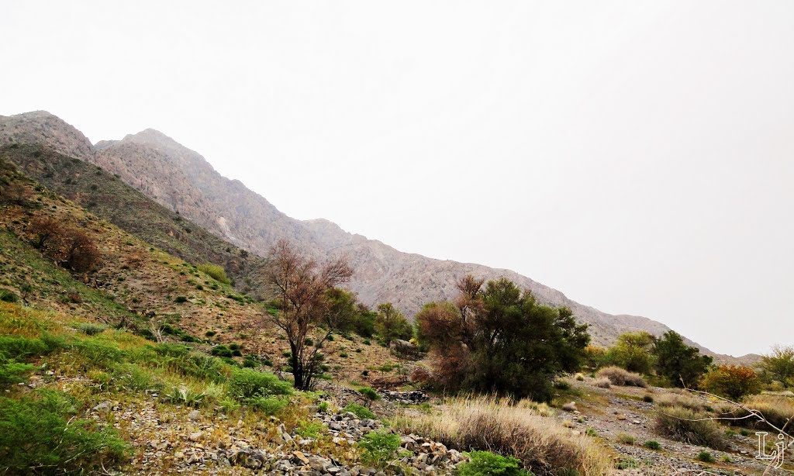

Introduction
Hazarganji-Chiltan National Park is a protected area located near Quetta, Balochistan. Established in 1980, its primary purpose was to provide a sanctuary for the endangered Chiltan Markhor. The park covers an area of approximately 155 square kilometers and its name, "Hazarganji," translates to "Of a Thousand Treasures," hinting at the rich biodiversity and local legends associated with the region.
Landscapes & Geology
The park is characterized by its rugged, mountainous terrain, which is part of the Sulaiman Mountain Range. The landscape consists of steep slopes, arid plateaus, and deep ravines carved by seasonal streams. The elevation varies significantly, creating diverse microclimates that support different types of vegetation, primarily dry temperate forests and scrublands.
Biodiversity And Wildlife
Hazarganji-Chiltan is a critical habitat for a variety of species adapted to its harsh, arid environment. The park's conservation efforts are centered around its flagship species, the Markhor.
Location On Map
Conservation Efforts
The park was specifically created to save the Chiltan Markhor, whose population had dwindled to fewer than 200 individuals. Thanks to dedicated conservation programs, including anti-poaching patrols and habitat management, the population has shown a significant recovery. The park serves as a vital research center for studying the ecology of the Markhor and other native species.